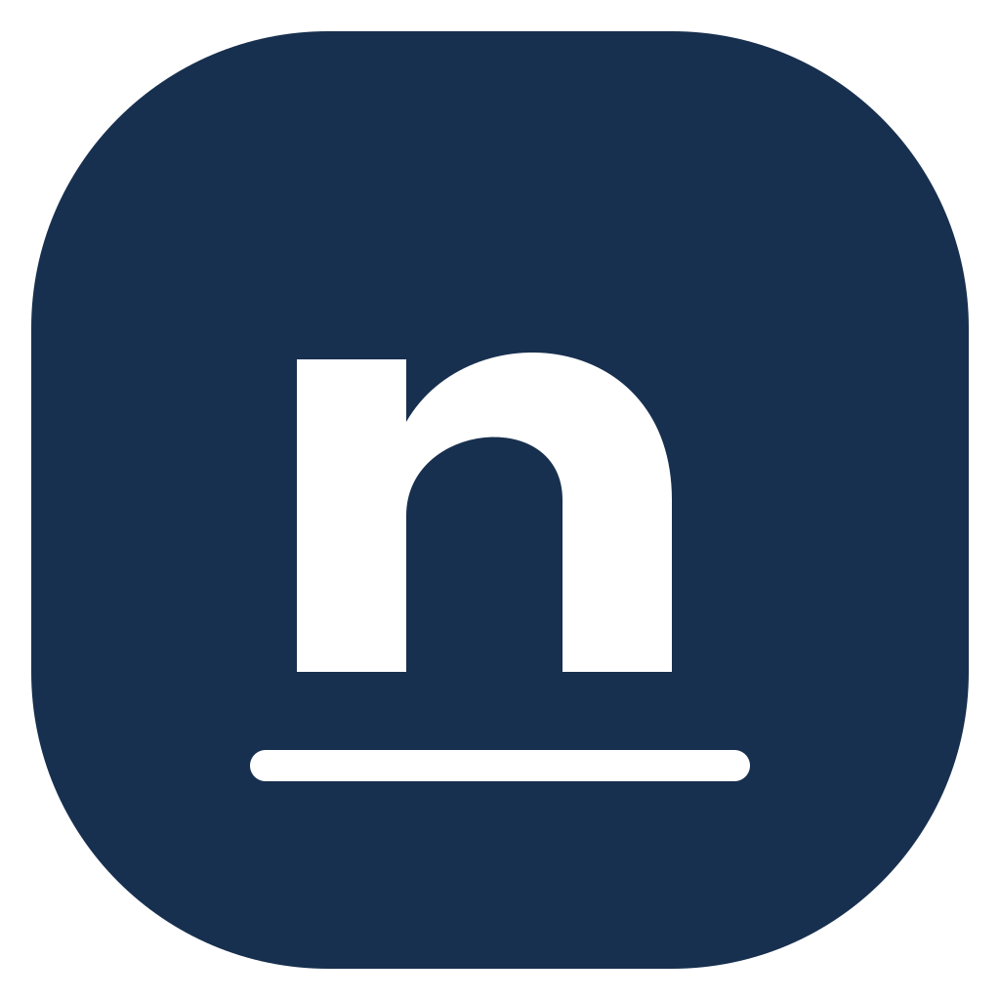

Space to write
Organize books, write with a pen, zoom into details and undo a mistake. Read and edit on your phone, too.

NiblumaIn development
A notebook app for handwritten ideas and the paper you want to keep. Designed for iPad and Android tablets, with your phone close at hand.
Made for real notebooks
Organize books, write with a pen, zoom into details and undo a mistake. Read and edit on your phone, too.
Scan a document or bring in a photo, then add notes directly on the page.
Work offline. Optional sync is planned through iCloud on Apple, Google Drive on Android and Nextcloud on both.